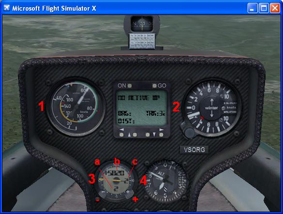
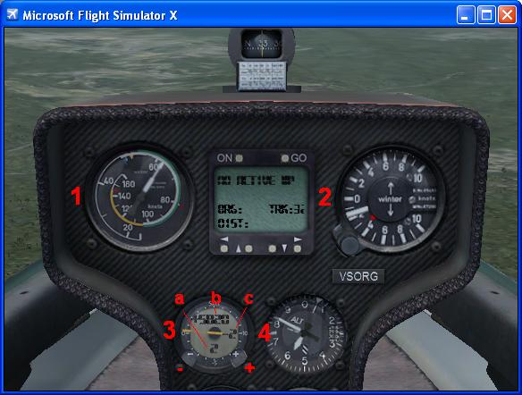

Soaring with FSX >> SimObjects >> SOAR DG808S
FSX SOAR DG808S
The SOAR DG808S updates the original Microsoft model for FSX with new instruments, sounds, and
a more accurate flight model. DOWNLOAD HERE
The update was a team effort by members of virtualsoaring.org.
 

The instruments in the SOAR DG808S have been modified from the Microsoft original.
1. Airspeed Indication
no change
2. Winter Variometer
displays 'Total Energy' lift/sink, rather than vertical climb. CumulusX *also* provides this calculation
so if you have that there's little change. The basic principle is simple - add or subtract a 'compensating value'
to the displayed climb/sink rate if you are accelerating or decelerating. This has the effect of cancelling out
'stick thermals' based purely on the pilot pushing or pulling on the stick. At a steady speed, the TE vario
reading is *identical* to the uncompensated 'vertical climb' reading. Further information on the total energy
calculation can be found on the Wikipedia here. The tiny red needle you might have noticed is a backup display
of the FSX 'variometer rate' - if you have CumulusX running this will display pretty much the same as the main
TE needle, but if not you'll see it swing wildly as FSX just uses pure vertical climb.
3. 'Cambridge' LCD Variometer
this has major changes:
- The *needle* now reads 'NETTO', which is the TE climb/sink reading above adjusted again for the sink due to the aircraft glide ratio at the current airspeed. This means the needle is indicating what the outside air is doing, so long as the performance of the glider is exactly as calibrated. This is by *far* the most useful indication of lift to help your cross-country performance whether thermalling or ridge soaring. If you do something to change (worsen) the performance of the glider (open airbrakes, put wheel down, dump ballast) the netto instrument will recognise the glider is descending relative to the calibrate performance and interpret that as the air must be sinking outside the glider. (see Wikipedia here). In general in still air the Netto should read zero regardless of the steady speed you're flying. As you blast along a ridge at 100knots+, the netto gauge will correctly indicate strongly rising air - remember this does not mean you are actually climbing, you need the Winter TE indication for that. But the netto gauge accurately tells you you *could* climb if you slowed up, while at 100 knots the TE gauge is simply displaying your sink rate.
- The digital display shows "Arrival Height" in either feet or meters (displayed at 'b' in screenshot) depending on the FSX units setting. This is the height AGL you are expected to arrive at the next waypoint (either Mission Point-of-Interest, or GPS waypoint, or if neither is set then the display just shows current altitude MSL). This calculation takes into account the prevailing wind speed and direction, the distance and bearing to the waypoint, the altitude of the waypoint, and the polar of the glider. The calculation is dependent upon the Maccready Setting (displayed at 'a' in screenshot, see Wikipedia Speed to Fly) which is set by the (+) and (-) buttons on the rim of the vario. The simple principle is you set the rate of the next thermal expected (in knots or m/s depending on FSX units) and the vario will assume you are flying at the correct speed-to-fly given that expected climb rate. E.g. if you expect the next thermal to be 6 knots (maccready setting 6) you will be zooming around at an airspeed of 100knots, but a maccready setting of zero implies you will be flying much slower (in fact at max L/D, say 60 knots). So... as you crank up the maccready setting you will see the arrival height come *down* because if you fly faster you'll come down steeper and arrive lower. If you want this to be simple, set the Maccready to 4 and forget about it, but watch the 'arrival height' on your final glide, only start the final glide when the arrival height is (say) 200 feet, and if the arrival height decreases then slow up which will (should) get it back on track. If you fly through heavy sink, the arrival height will start sinking like a rock and speeding up or slowing down won't necessarily save you, i.e. the gauge is not a safe-arrival-teleportation-device.
- The current flap setting is indicated for convenience at 'c' in the screenshot. At 70 knots plus you should be in -1 then -2 flap, below that you feed in zero then +ve flap. Thermal on +3 and do the landing on +4. A reminder - don't forget to dump the water a couple of minutes before you land.
4. Altimeter
change except it is moved to this position, swapped with the Winter vario.
Additional features
This update to the Microsoft DG808S includes the TrimWizard utility, which adjusts your trim setting instantly to the current position
of the joystick when you apply the brakes (defaulting to the 'trigger' position on the joystick).
Credits
3D glider and cockpit model by Microsoft/Aces Studio.
FSX XML instruments by Ian Forster-Lewis.
Flight model by Peter Luerkens, Ian Forster-Lewis, Bert de Bruin.
TrimWizard by Peter Luerkens.
(apologies to anyone omitted - these things are very collaborative and lots of people contribute, including testing.